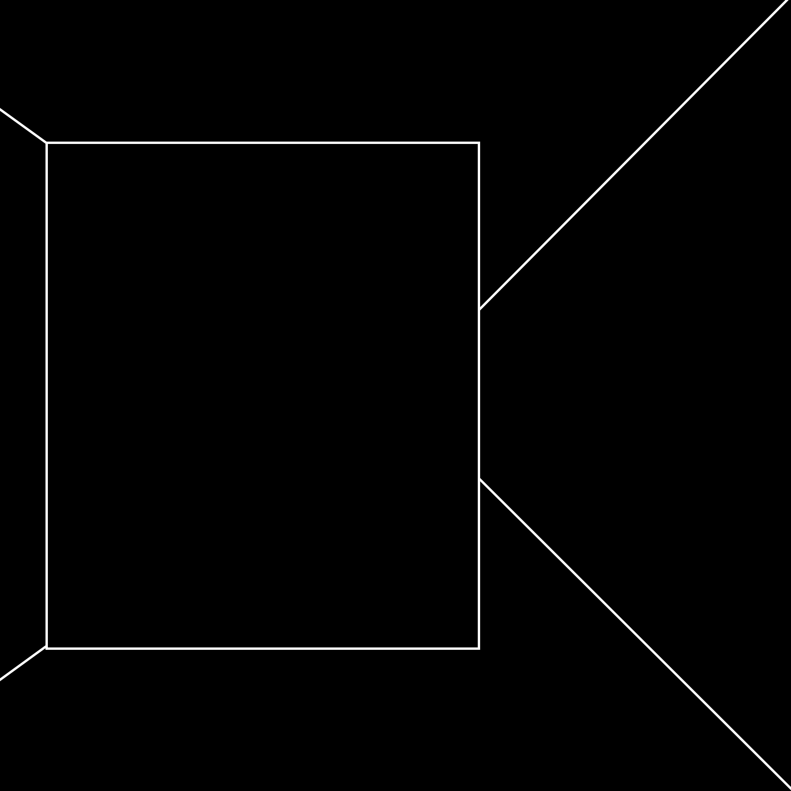

When I told Mr. Angel about the lifelong sentence, he said: “That’s a lot of semicolons!” he is absolutely right; the sentence would be unwieldy and awkward and resemble the novel of a savant, but the next time you use a semicolon (which, by the way, is the least-used mark of punctuation in all of poetry)
you should stop and be thankful that there exists this little thing, invented by a human being—an Italian as a matter of fact—that allows us to go on and keep on connecting speech that for all apparent purposes is unrelated.